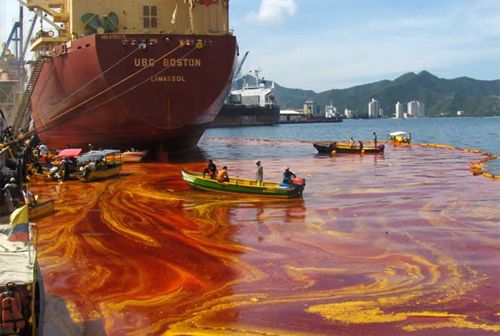
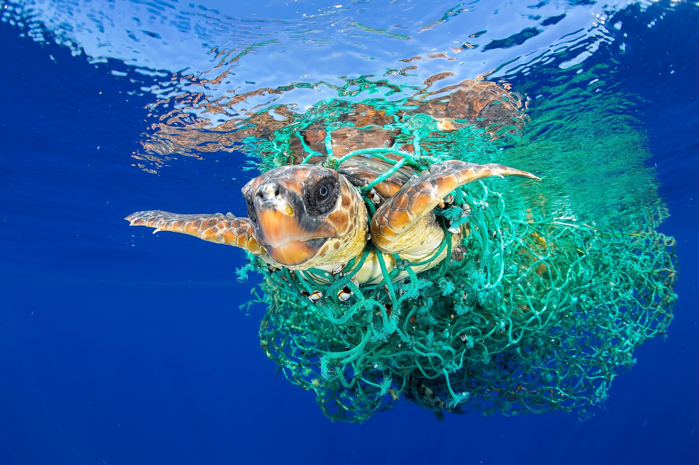
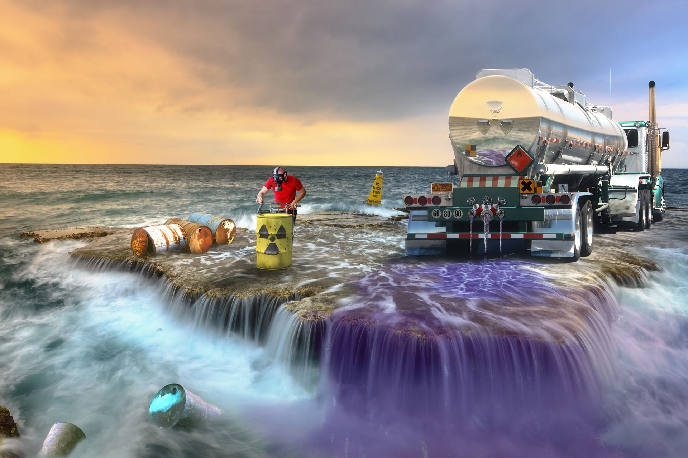

Chemical Water Pollution
Industrial and agricultural work involves the use of many different
chemicals that can run-off
into water and pollute it.
Metals and solvents from industrial work can pollute rivers and lakes.
These are poisonous to many forms of aquatic life and may slow their
development, make them infertile or even result in death.
Pesticides are used in farming to control weeds, insects and fungi.
Run-offs of these pesticides can cause
water pollution and poison aquatic life.
Subsequently, birds, humans and other animals may be poisoned if they
eat infected fish.
Petroleum is another form of
chemical pollutant that usually contaminates water through oil spills when a
ship ruptures.
Oil spills usually have only a localised affect on wildlife
but can spread for miles.
The oil can cause the death of many fish and stick to
the feathers of seabirds causing them to lose the ability to fly.

Oil Pollution
Everyday, oceans are heavily polluted with oils derived from oil spills,
dumping, run-offs, and shipping.
In fact, an estimated 706 million gallons
of waste-oil enters the ocean each year.
As the oil is not able to dissolve
in water, it develops into a thick sludge that harms fish, affects marine birds,
and blocks light to aquatic plants.
These oils can also contaminate water for
drinking and other purposes.
As oil cleanup can be a long and expensive process,
cleaning water that has been contaminated with oil is simply not an option.
This means men, women, and children in less privileged countries are forced to
use polluted water to drink, bathe, and cook.

Plastics
Today, plastics are used in all types of manufacturing ranging from the production
of clothing to car parts. As plastic is lightweight,
it is often washed away into
rivers and oceans.
Plastic is also non-biodegradable, meaning it can last for decades
while presenting a danger to marine animals.
Modern plastics also contain harmful
chemicals that can seep into the water over time. Some types of plastic contain
bisphenol.

Radioactive Waste
Exposure to radiation increases the risk of damage to cells, tissues, and DNA.
Long-term exposure can result in serious issues like cancers, birth defects,
leukemia,
genetic mutations, and immune and endocrine system disorders.
When factories release radioactivity into the air, soil, and water, it can
cause these problems and more in people who come into contact with the
radioactive waste. Radioactive waste can also last for many centuries
making cleanup a major challenge.
If radioactive waste is not
disposed of properly, contaminants can spread to groundwater and surface
water.